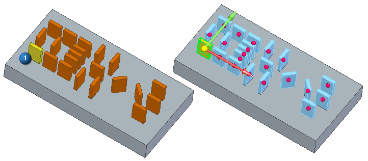
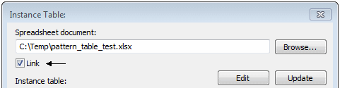
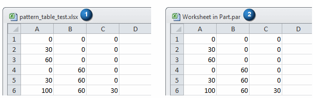
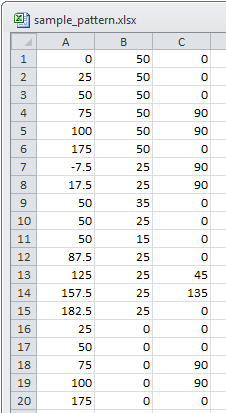
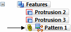

Pattern by Table command
Use the Pattern by Table command to create patterns that has its instances defined by an Excel spreadsheet. Shown below is a feature pattern (1) being patterned by instance data in an Excel spreadsheet.

Excel Spreadsheet
An Excel spreadsheet can either be linked to the file or embedded in the file. First browse for the Excel spreadsheet that drives the pattern. When the Link check box is selected, the spreadsheet is linked to the file. Clearing the Link check box embeds the Excel spreadsheet in the file.

When you work in a managed environment, first, save your document, then link the Excel spreadsheet.
When editing a linked spreadsheet, the spreadsheet name (1) appears as shown at the top of the table. When editing an embedded spreadsheet, the name appears as shown in (2).

The Excel spreadsheet contains an XY position and a rotation angle for each pattern instance. Column A contains the X distance from the selected reference point. Column B contains the Y distance from the selected reference point. Column C contains the rotation angle of the pattern instance. Each row is a pattern instance definition.
The first row in the Excel spreadsheet defines the master reference coordinates and is displayed as the first row in the Instance Table dialog box. The orientation of all pattern instances is calculated relative to that of the master instance.

The pattern feature is associatively linked to the Excel spreadsheet. Any changes to the Excel spreadsheet causes the pattern to update.

Pattern Coordinate System
You can use the global coordinate system or any user coordinate system to control the pattern orientation. If the user coordinate system changes, the pattern orientation changes automatically.
Editing the pattern by table feature
To edit a synchronous pattern-by-table feature, select the feature and then click the pattern handle. You can edit any step used in the pattern definition.
To edit an ordered pattern-by-table feature, select the feature and then select Edit Definition. You can edit any step used in the pattern definition.